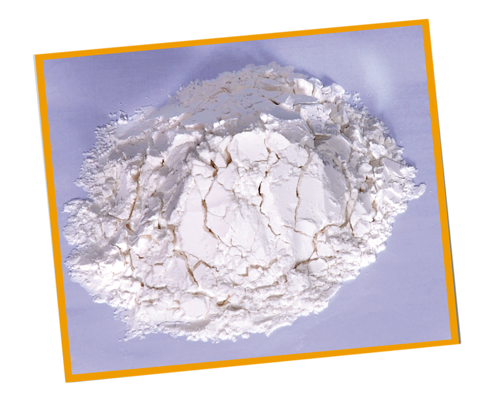

සහල් වල ආකර්ෂණිය දිලිසෙන සුළු පෙනුමක් ලබා ගැනීමට සහල් නිවුඩ්ඩ ඉවත්කල යුතුය.නිවුබිබ ඉවත්කරන ප්රමාණයට අනුව දිලිසිම ද වැඩිවේ.එහෙත් මෙහිදි සහල් ඇටය මතුපිට රැඳි දළ තන්තු , ඛණිජ ද්රව්ය හා විටමින් ද ර්සමඟ ඉවත්ව යයි.මේ නිසා මුතු මෙන් දිලිසෙන සහල් වල යට කී පෝෂණ ගුණ හීනය.
තවද වෙළදපොලේ දැකිය හැකි තිරිඟු පිටි සහ සුදු පාන් වල සැලකියයුතු මට්ටමකින් පෝෂණ ගුණ (ප්රෝටීන් ,විටමින් B වර්ග , යකඩ, කැල්සියම්,සින්ක් හා දළ තන්තු හීන වි පැවතිය හැකිය.එයට හේතුව මෙරට තිරිඟු ඇඹරිමේ දී පවතින පහළ නිස්සාරන වේගය (Extraction rate -72%)වේ.එම නිසා තිරිඟු ආශ්රිත නිෂ්පාදන හා සැසඳිමේ දී සහල් වල (විශ්ෂයෙන් නිවුඩු සහිත ) පෝෂණ ගුණය ඉහලය.